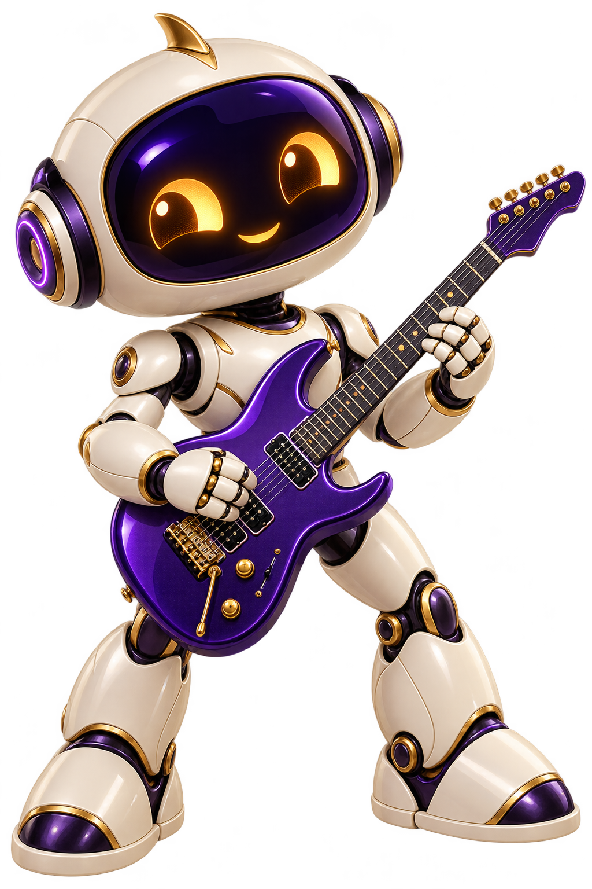

Music and video,
together.
Browse albums, folders and videos in one library, with your favourites always within reach.
AlbumsVideosPlaylists
In development · app not released
YOUR MUSIC. YOUR VIDEOS.
One home for the songs you love and the videos you keep. A new player from Ashtadeep.
A working browser preview. Native apps are planned.

TRY IT HERE
This preview plays browser-supported audio and video from your device. Your selected file is not uploaded.
Your next favourite moment.
Choose an audio or video file below.Nothing selected yet
Nothing plays until you choose a file and press play.
Format support depends on your browser. This preview does not represent the planned native app’s full codec support.
THE VISION · PLANNED FEATURES
Browse albums, folders and videos in one library, with your favourites always within reach.
Equalizer, gapless listening and volume normalization are on the roadmap.
Subtitles, playback speed, bookmarks and resume controls for your videos.
Local playback first. Personal media-server connections and casting come later.
Clear everyday controls, with advanced settings available when you need them.
A QUIETER KIND OF PLAYER
Our design goal: local playback without an account, and no advertising interrupting your music or video.
For this website preview, selected media stays in your browser. There are no analytics scripts, sign-ups or uploads.
WHAT COMES NEXT
The browser preview is available here. App development and platform choices are still ahead; no release date is promised.
Ashtadeep Aura identity, Riff mascot, this website and basic local browser playback.
Native music/video playback, media library, playlists, search, background audio and subtitles.
Audio tuning, gapless playback, lyrics, gestures, bookmarks and accessibility improvements.
Personal media servers, casting, optional sync and more platforms, after core playback is reliable.
STRAIGHT ANSWERS
Not yet. This is the first website and browser preview. Native apps have not been released.
No catalogue is provided. The starting point is playing your own files. Connections to your personal media sources are planned.
Browsers support different codecs and containers. Try an MP3 audio file or an MP4 video with H.264 video and AAC audio. Native app format support will be defined and tested separately.
Android is the recommended first platform. Desktop and iOS are proposed follow-ups; the launch order is not confirmed.
Meet Riff: the original robot mascot created for Ashtadeep Aura. Violet headphones, warm golden eyes, and an electric guitar.
AN ASHTADEEP APP
Aura joins the Ashtadeep family alongside AshtaLok.